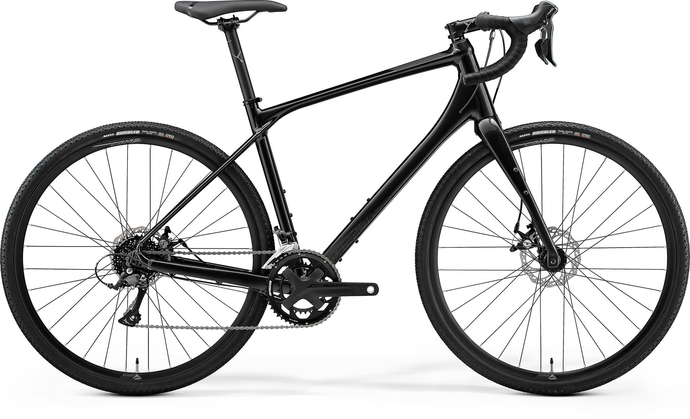

Monika Kwiatkowska - Strona domowa
Kim jestem?
Monika Kwiatowska. Uczę się frontu, chociaz go nie lubię. Jednak jest mi potrzebny w rozwoju.

Dziennik postępów
Dzisiaj odtwarzam pliki, które zniknęły.
Kazdego dnia postaram się coś robić aby widzieć postępy.